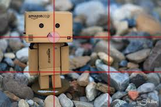

Regla de los Tercios
Divide la imagen en tres partes horizontales y verticales. Coloca elementos importantes en las intersecciones para lograr equilibrio visual.
Iluminación Natural
Aprovecha la luz del amanecer o atardecer para obtener tonos cálidos y sombras suaves.